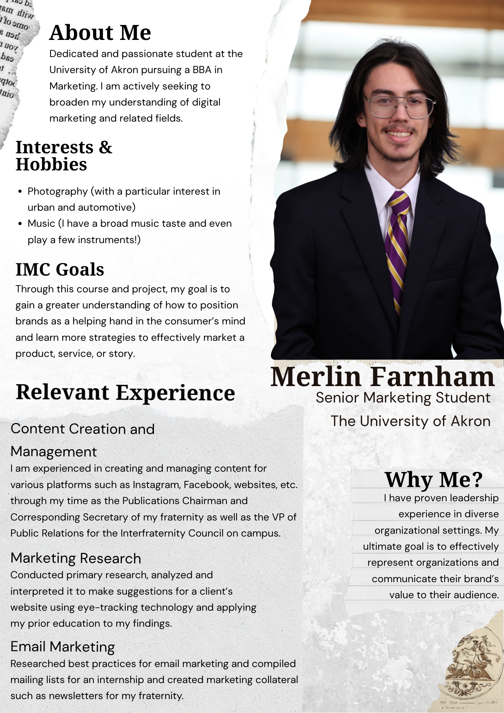
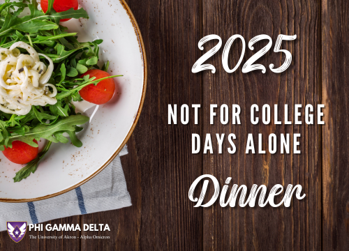
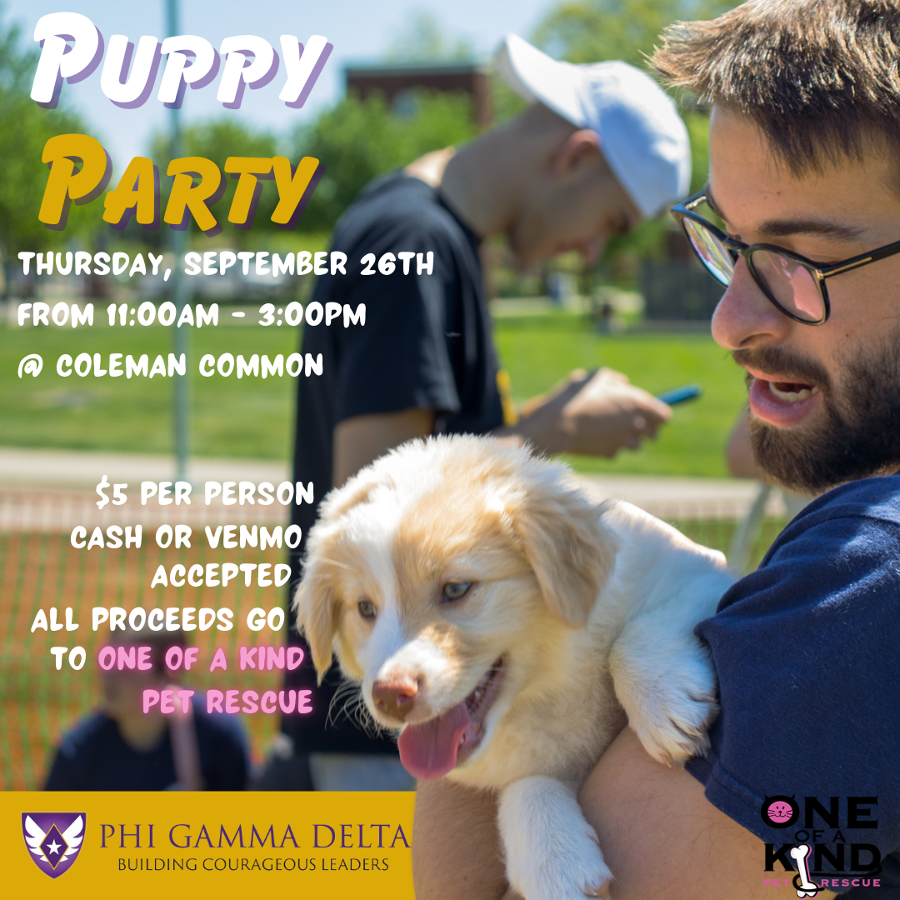

An executive bio and consultant profile blending clean visual layout with unique personal branding. Designed as an introduction for corporate clients to establish capability, scope, and professional alignment.

Developed comprehensive event branding and multi-channel communications collateral for FIJI's annual graduate dinner. Designed a cohesive visual identity across digital invitations, RSVP touchpoints, and print materials to drive attendance, strengthen and ensure brand alignment, and elevate graduate engagement.
A comprehensive, multi-channel IMC strategy planbook co-developed for a registered 501(c)(3) non-profit organization. Leveraged data-driven SWOT analysis and deep consumer personas to pinpoint our strategy, while applying Donald Miller's StoryBrand Framework to clarify and elevate the brand’s core messaging.
A customized, executive campaign proposal based on the Because of B.R.A.Y.D.E.N. IMC planbook. Formatted as a high-level client presentation to communicate strategic cross-channel initiatives and campaign timelines to organizational leadership.

Developed a multi-channel identity and promotional campaign for a campus philanthropy event. Designed high-impact, platform-optimized graphics for Instagram alongside a coordinated print flyer for physical distribution, ensuring consistent brand messaging across digital and traditional channels.
A strategic B2B marketing analysis focused on Brembo’s automotive brake assemblies. Evaluated corporate communication channels, identified unique value drivers, and developed custom buyer personas to give a high-level overview of Brembo's B2B strategy
A mixed-methods primary consumer research project utilizing surveys, focus groups, and eye-tracking to establish qualitative and behavioral metrics for the University of Akron Police Department. This initiative resulted in data-driven recommendations and measurable changes for campus law enforcement.
A premier edition of the local chapter newsletter for Phi Gamma Delta, completely designed, written, and edited from the ground up. This publication served as the foundational blueprint that was later elevated to an international design standard.
Get to know the strategist behind the work. Explore my story.
About